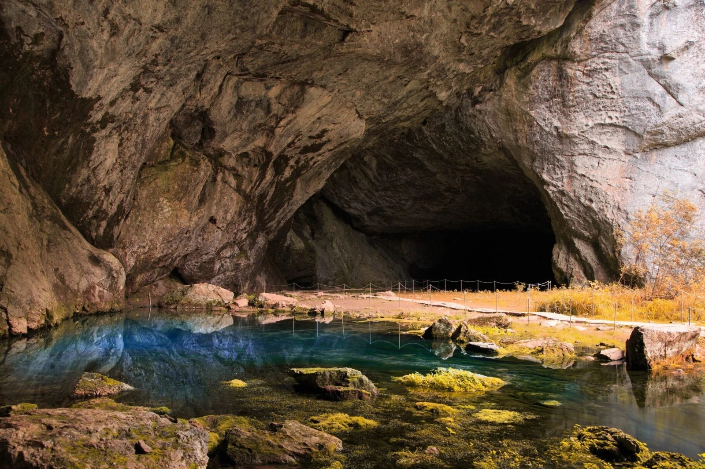
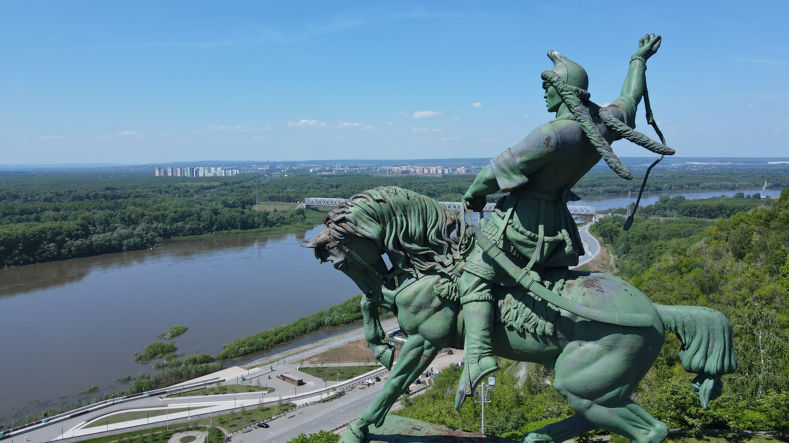
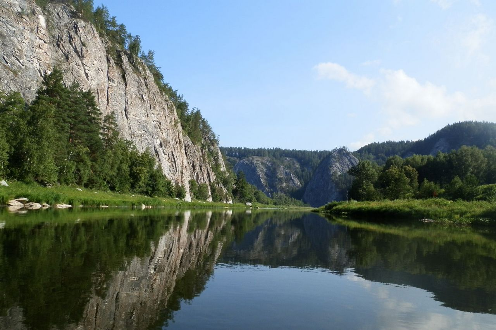
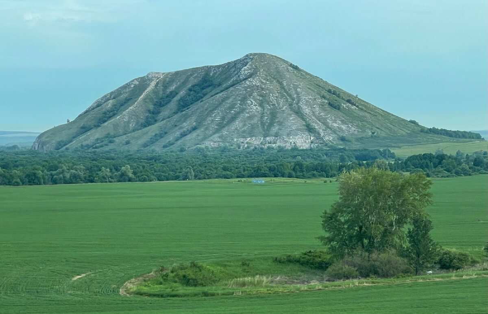
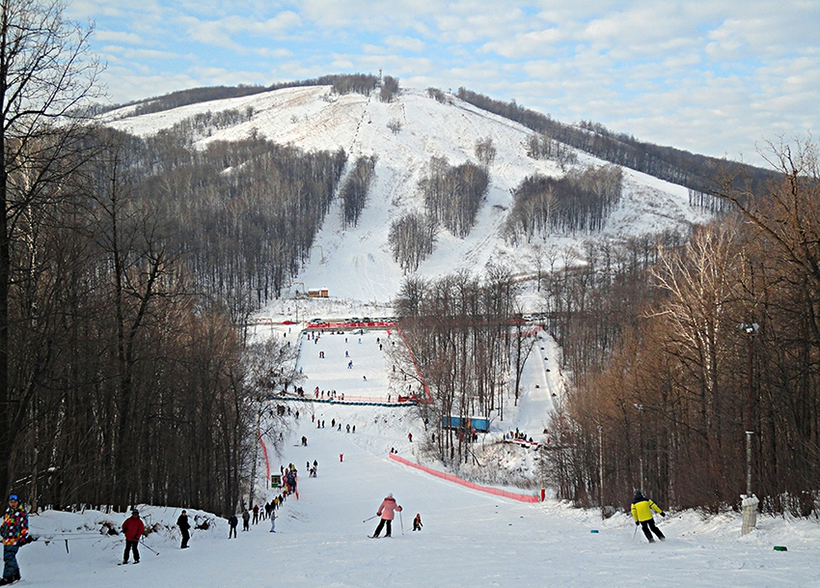
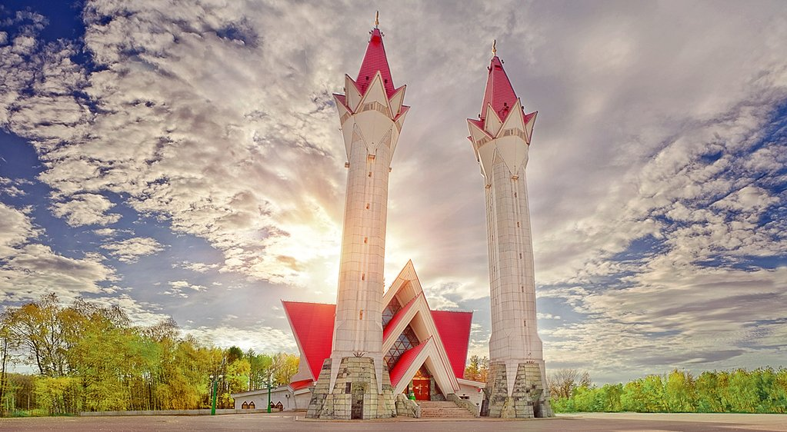
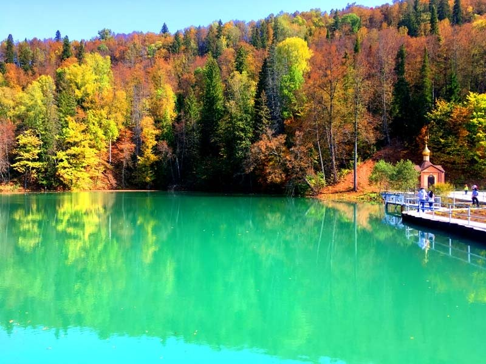

Достопримечательности Башкортостана
1.Заповедник "Шульган-Таш"
Заповедник был создан в середине прошлого века и занимает территорию 22,5 тысяч га. Славится он обитающей в этих местах популяцией бурзянской пчелы, дающей знаменитый на всю страну мед. А еще одна его достопримечательность – Капова пещера протяженностью 3 км. В ее недрах были найдены уникальные наскальные рисунки животных, хижин, разных фигур и знаков. Выполнены они довольно реалистично при помощи охры, иногда и угля. Предполагают, что период из создания – XII-X тысячелетия до нашей эры. |

2.Памятник Салавату Юлаеву
Грандиозный памятник национальному герою, поэту и сподвижнику Емельяна Пугачева создавался в течение 30 лет и был установлен в центре Уфы на берегу реки Белой в 1967 году. Это самая масштабная конная статуя во всей Европе. Ее вес – 40 тонн, а высота достигает 10 метров. Изготовлен памятник из чугуна с бронзовым покрытием. Монумент служит визитной карточкой столицы республики и символом всего башкирского народа, стремящегося к независимости. |

3. Река Белая
Главная водная артерия Башкортостана, самый длинный приток Камы. Пересекает почти всю республику с юга на север, начинается в горах, а затем превращается в полноводную равнинную реку. Большой популярностью река пользуется у любителей водного туризма, путешествие по ней может занять несколько недель. Вдоль ее берегов расположено много интересных достопримечательностей – горные заводы, скалы и пещеры, крепости и др. Привлекает река и любителей рыбной ловли. |

4.Шиханы
Башкирские Шиханы – это древние коралловые рифы, которые в прошлом находились на дне Пермского моря, уникальные геологические памятники природы. Их возраст – более 230 миллионов лет. Это удивительное место находится около города Стерлитамак и представляет собой несколько высоких холмов конусообразной формы. Всего шиханов три: Юрактау, Куштау и Тратау. До недавнего времени был и четвертый шихан – Шахтау |

5. Горнолыжный комплекс Куш-Тау
Популярный курорт расположен на склонах одноименной горы, самой длинной из четырех Стерлитамакских Шихан. Для профессиональных спортсменов и просто любителей горнолыжного катания здесь созданы несколько разных по уровню сложности трасс, а также сноубордпарк. Ко всем трассам ведут подъемники. Для детей предназначены облегченные тюбинговые трассы. Полноценному отдыху способствуют чистый воздух и великолепная природа здешних мест. |

6.Мечеть «Ляля-Тюльпан»
Уфимская соборная мечеть «Ляля-Тюльпан» исламский культурно-образовательный центр в Уфе. Открыт 7 апреля 1998 года.
Мечеть «Ляля-Тюльпан» – одна из визитных карточек и известная достопримечательность Уфы. Архитектурный ансамбль мечети неповторим, узнаваем и невероятно красив. Архитектором проекта является Вакиль Вагизович Давлятшин.
Изящные белоснежные колонны устремлены в небо, а красные минареты раскрыты вверх, к солнцу, подобно бутонам тюльпанов. Тюльпан считался у тюркских народов символом прихода весны.
|

7.Источник Красный Ключ
Самый большой родник России имеет впечатляющие размеры и расход воды. Каждую секунду из башкирского ключа вытекает 14,88 куб. м прохладной, приятной на вкус воды.
Мощный прозрачный поток появляется из двух соединенных между собой карстовых воронок глубиной 20 м и 38 м, образуя озеро 190 м на 170 м.
Так выходит на поверхность река Яман-Елги, которая берет начало на хребте Каратау и по большей части течет под землей. |
